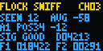
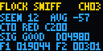
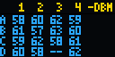
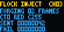

Chapter 3
The tool and its screens
Your board runs one program — a combined sniffer and injector. You drive it entirely over the serial port: you send short text commands, and it streams back one JSON object per line. This chapter is the reference you will keep open.
3.1 The serial contract
The interface is deliberately simple, which is what makes it easy to script later.
- To the board: a command as text, ending in a newline. Matching is exact and
case-sensitive (
FIND, notfind), with no trailing spaces. - From the board: every captured frame and every command acknowledgement is a single JSON object on its own line. To read it from code you just read a line and parse it.
That one-line-in / one-JSON-line-out shape is all you need to drive the board from a script — you will use it for timed replays and floods in chapter 6.
3.2 Two modes, one radio
A single radio cannot listen and transmit at the same time, so the tool has two modes:
- SNIFF — the default. It listens on one channel and streams every frame it hears.
- INJECT — it transmits the frames you forge. Any injection command switches it into
INJECT automatically; type
SNIFFto go back to listening.
3.3 Command reference
Type HELP on the board to print this list at any time.
Capture & tuning
| Command | What it does |
|---|---|
FIND <ms> | Scan every channel, then lock onto the one carrying the swarm. Optional dwell per channel in ms (default 1500). |
SCAN <ms> | Scan and report, but stay on your current channel (don't retune). |
CH <1-13> | Tune to a channel manually. |
SNIFF / INJECT | Switch mode. |
VERBOSE / QUIET | Turn the per-frame JSON stream on or off. |
RAW <n> | Dump the next n frames as raw hex — this is how you grab bytes to replay with SEND. |
STATS | Counters: frames seen and injected, broken down by kind. |
Injection — forging the swarm's picture
| Command | What it does |
|---|---|
CONTACT <id> <x> <y> <cls> <conf> <flags> | Forge a target contact (frame kind 4). Keeps re-sending until stopped. |
CONTACT <id> OFF | Stop re-sending that forged contact (CONTACT OFF stops all). |
CLAIM <label> <contact> <role> <dist> | Forge a role claim (frame kind 5) as if from node <label>. |
CLAIM <label> OFF | Stop that forged claim (CLAIM OFF stops all). |
SEND <hex> | Transmit one raw frame from hex bytes — your replay primitive. |
cls: 0 UNKNOWN · 1 BLU · 2 RED · 3 CIV.
role: 1 LEAD · 2 SUPPORT · 3 YIELD.
flags is a number — add the bits:
1 active 2 high-value
8 committed 16 hazard.
Full meanings in chapter 4.
Stealth tooling
These change how your frames look on the air — useful when you are trying to degrade the swarm without being flagged (see chapter 6).
| Command | What it does |
|---|---|
MAC VARY / MAC OWN | Vary the source MAC address of forged frames, or use your own fixed one. Varying makes your traffic blend in rather than all coming from one radio. |
POWER <0-20> / POWER VARY | Set transmit power (dBm), or vary it. A frame that is suspiciously loud stands out. |
Display & housekeeping
| Command | What it does |
|---|---|
PAGE <0|1|2|AUTO> | Choose the OLED page: 0 sniff, 1 signal grid, 2 inject — or AUTO. |
DEMO <ON|OFF> | Play a built-in demo stream (for testing the tool away from the wall). |
RESET | Reboot the board. |
3.4 Reading the OLED
Every value on the OLED is also in the serial JSON, but the screen is a fast glance. The top (yellow) line is always a header; the four blue lines below are the body.
Sniff page (PAGE 0)


The device font has only capitals and digits, so a comma prints as a blank —
POS34,-12 shows as POS34 -12. That is the real hardware, not a mistake.
Signal grid (PAGE 1)

-- means
not heard. Handy for working out which panel is which.Inject page (PAGE 2)

The scan page appears while FIND
or SCAN is running — it is covered in chapter 5,
where you actually locate the swarm.